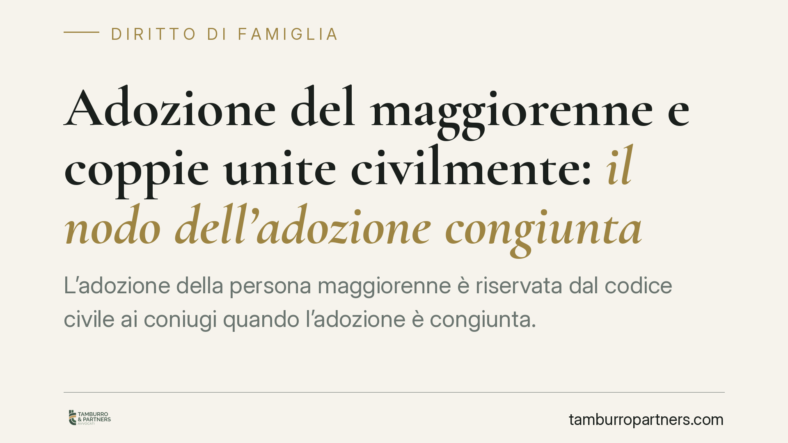

Adozione del maggiorenne e coppie unite civilmente: il nodo dell'adozione congiunta
L'adozione della persona maggiorenne è riservata dal codice civile ai coniugi quando l'adozione è congiunta. Se le coppie unite civilmente possano accedervi alle stesse condizioni è un tema di legittimità costituzionale ancora dibattuto, legato alla clausola di equivalenza della legge Cirinnà e alla sua eccezione in materia di adozione.

Avvertenza sugli estremi della pronuncia
Il presente contributo tratta la questione giuridica dell'adozione congiunta del maggiorenne da parte di coppie unite civilmente. Gli estremi di un'eventuale pronuncia della Corte costituzionale su questo punto vanno verificati sulle fonti ufficiali (Gazzetta Ufficiale, sito istituzionale della Corte) prima di qualunque utilizzo. In questa sede non vengono riportati numero e anno di decisioni non confermate.
Di cosa parliamo: l'adozione del maggiorenne
L'adozione del maggiorenne è un istituto distinto dall'adozione del minore. Non crea un rapporto di filiazione pieno e non recide i legami con la famiglia d'origine: produce effetti più limitati, soprattutto sul piano del cognome e della successione.
Le conseguenze principali sono due. L'adottato assume il cognome dell'adottante anteponendolo al proprio (art. 299 c.c.). Sul piano successorio, l'adottato acquista diritti nei confronti dell'adottante, mentre l'adottante non diventa erede legittimo dell'adottato (art. 304 c.c.).
La questione qui trattata non incide in alcun modo sull'adozione del minore, che segue regole e finalità del tutto diverse.
I requisiti di legge
L'art. 291 c.c. richiede che l'adottante abbia compiuto trentacinque anni e superi di almeno diciotto anni l'età di chi intende adottare. Non si tratta di un divario modificabile a discrezione del giudice: il tribunale può autorizzare l'adozione riducendo la differenza fino a un minimo di sedici anni solo in presenza dei presupposti e dei casi previsti dalla norma, e comunque mai al di sotto della maggiore differenza.
L'adozione richiede inoltre una serie di consensi e assensi. Oltre al consenso dell'adottante e dell'adottando, l'art. 296 c.c. richiede l'assenso del coniuge dell'adottante e dell'adottando, se coniugati e non legalmente separati. L'art. 297 c.c. richiede l'assenso dei genitori dell'adottando. In mancanza, la legge disciplina i casi in cui il tribunale può pronunciarsi ugualmente.
Il punto controverso: adozione congiunta e unioni civili
L'art. 294 c.c. disciplina la possibilità di adottare più persone e stabilisce che l'adozione congiunta della stessa persona sia consentita ai coniugi. Il nodo è se questa possibilità di adozione congiunta debba intendersi estesa anche ai componenti di un'unione civile.
Qui entra in gioco la legge Cirinnà. L'art. 1, comma 20, della L. 76/2016 prevede, in via generale, un principio di equivalenza: le disposizioni che si riferiscono al matrimonio e i termini «coniuge» si applicano anche a ciascuna delle parti dell'unione civile. Lo stesso comma, però, contiene una clausola di salvaguardia: l'equivalenza non opera per le norme del codice civile non espressamente richiamate dalla legge e per quelle in materia di adozione.
È proprio questa eccezione a generare il dubbio di legittimità costituzionale. La questione è se riservare ai soli coniugi l'adozione congiunta del maggiorenne, escludendo le parti dell'unione civile, sia compatibile con i principi di uguaglianza e di tutela della vita familiare. Si tratta di un profilo di adozione del maggiorenne, con effetti prevalentemente patrimoniali e nominativi, non di affidamento o cura di un minore.
Implicazioni pratiche
Per una coppia unita civilmente che intenda adottare congiuntamente una persona maggiorenne, l'esito dipende dall'orientamento che consoliderà la giurisprudenza. Finché il quadro non è definito, la richiesta congiunta resta esposta a incertezza, mentre l'adozione da parte di un solo componente dell'unione segue le regole ordinarie degli artt. 291 e seguenti.
Cosa fare in concreto
- Verificare i requisiti anagrafici prima di ogni iniziativa: età dell'adottante e differenza di almeno diciotto anni con l'adottando (art. 291 c.c.).
- Ricostruire i consensi e gli assensi necessari secondo gli artt. 296-297 c.c., individuando chi deve prestarli (coniuge, parti dell'unione, genitori dell'adottando).
- Valutare l'alternativa dell'adozione individuale rispetto a quella congiunta, considerando l'incertezza che grava su quest'ultima per le unioni civili.
- Reperire gli estremi ufficiali di eventuali pronunce costituzionali sul tema sulle fonti istituzionali, senza affidarsi a riferimenti non confermati.
- Ponderare in anticipo gli effetti su cognome e successione (artt. 299 e 304 c.c.), che costituiscono il cuore degli effetti dell'istituto.
Ogni famiglia ha il suo equilibrio.
Separazione, divorzio, affidamento, assegno: se vuoi un confronto riservato su una specifica situazione, scrivi allo studio. Ti rispondiamo entro un giorno lavorativo.